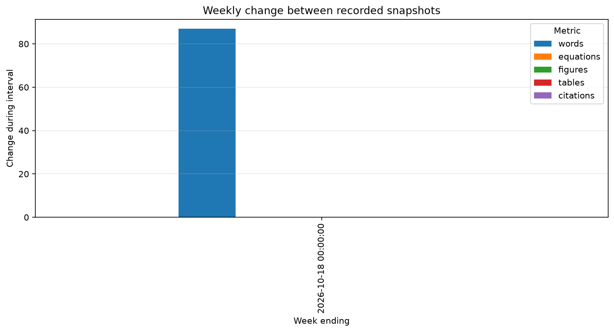
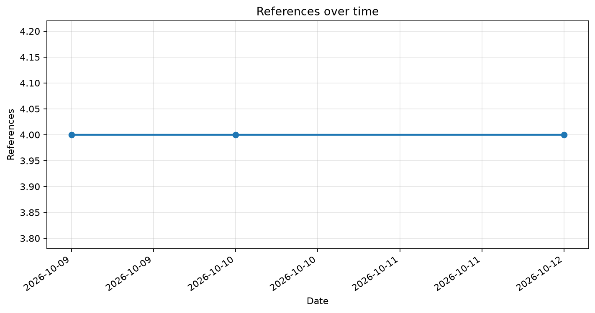

Weekly overview
A comparison of changes between recorded weeks.

Progress by metric
Each chart shows a separate measure of writing progress.




THESIS WRITING LOG
A visual overview of writing progress over time.
Last updated: 2026-10-12
A comparison of changes between recorded weeks.

Each chart shows a separate measure of writing progress.
